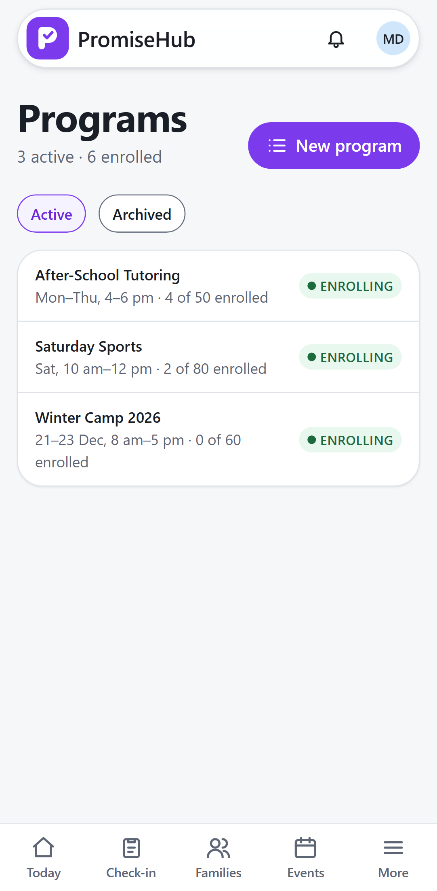
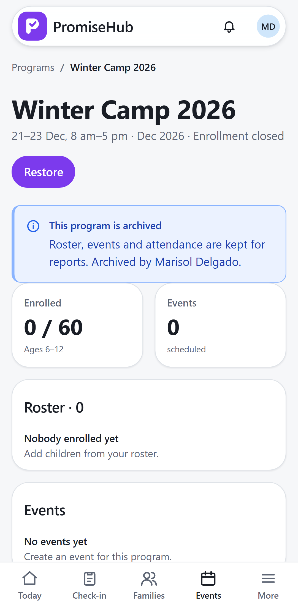

PromiseHub · Video 05
Create programs and events
Rosters, capacity, archiving, draft slips and cancellations
Rosters, capacity, archiving, draft slips and cancellations
Created empty and closed, then Amara joins the roster.


Kept as cancelled, with who and why.
| Role | Programs | Events |
|---|---|---|
| Admin, program director | Create, edit, archive, roster | Create, edit, cancel |
| Site lead | Read | Create, edit |
| Youth worker | Read | Read |
New-program rules, capacity, archive and restore, draft slips, cancelling, roles, cross-tenant, Roster off.
Create, roster, archive, restore and cancel at phone and desktop widths, axe on every page and dialog.
Next: check children in